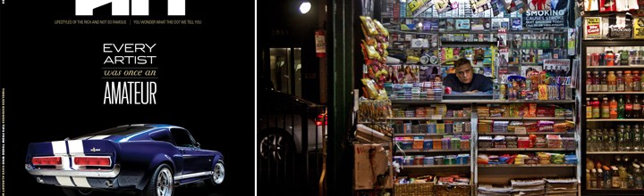

Money Art on YAHOO! News
Yahoo! (cheesy, I know.) It was cool to wake up and see my artwork on the front page of the website that literally introduced my to the world wide web.
Marginal Revolution – KUAD Gallery – ARTRA
Following Baker’s Dozen 5 at Torrance Art Museum, Marginal Revolutions traveled to KUAD Galery in Istanbul. Given the recent political unrest and public protest, it was an exciting time to be showing at KUAD Gallery. I sent two new TaxCut works – attack drones made from US Currency. This Show was organized by […]
Heavy Hitters Magazine #33
I was recently profiled in Heavy Hitters Magazine #33. If you haven’t seen it, immediately subscribe to the digital edition.
Ballast, Gravity, & an Oversized Head
I’ve spent the week wrestling with a 14 foot tall cheeseburger-headed politician. Today, I happy to report that I won the battle. Many thanks to my buddy Sean Pope and his superhuman abilities to manipulate steel; the Mayor now “rests” somewhat uncomfortably straddling a 1″ square tube steel post.
Mugging on Facebook
Assimilation Complete: You can now find me mugging on Facebook. Previous networks to Myspace and Friendster have been deleted. Friends/Colleagues/Idols/Fans please follow the link to my Facebook profile on the right & do stay in touch.
Waiting for Nothing
I wait for nothing all the time. What’s worse: when I am am waiting for something, nothing shows up with steadfast reliability.
Julian Schnabel – Better Director than Painter
Having finally seen The Diving Bell & the Butterfly, Julian Schnabel’s latest film, I was truly impressed. Clearly, his artistic voice is most eloquently translated in a directorial role. Paralysis, and imprisonment in one’s own mind are two of my absolute greatest fears. Eight years ago I suffered a burst fracture of my L1 vertebra, narrowly escaping paralysis in […]
New taxCut Suite Available
3 small pieces in a suite are now available for purchase through my gallery – Mark Moore Gallery, All pieces are US Currency on Canvas Guided Deliverance, 6″ x 6″, 2008 Body & Blood, 6″ x 6″, 2008 The Altar, 6″ x 6″, 2008
New taxCut Work Available
2 new pieces in the taxcut series are now available for purchase through my gallery – Mark Moore Gallery, All pieces are US Currency on canvas JSF, together we achieve more; 16 x 20; 2008 Comanche; 10 x 19; 2008